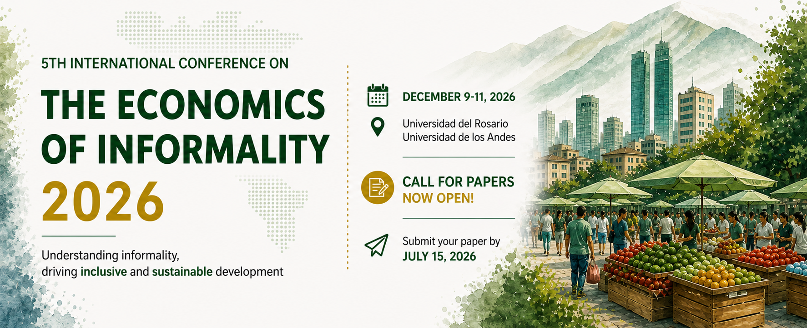
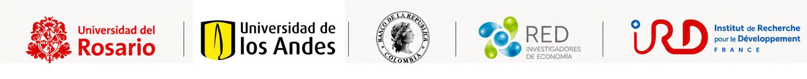

Submission deadline
Complete papers or extended abstracts should be submitted by this date.

Bogota, Colombia | December 9-10, 2026
A forum for rigorous academic and policy dialogue on informal economies, labor markets, development, institutions, and structural transformation.

Call for papers
The 5th International Conference on the Economics of Informality invites scholars, researchers, and policymakers to submit original research that advances the understanding of informal economies and their role in economic development.
The conference promotes rigorous and interdisciplinary dialogue between the academic community and policy practitioners, strengthening international research networks and expanding the frontier of knowledge across economic contexts.
Thematic areas
Important dates
Complete papers or extended abstracts should be submitted by this date.
Authors will be notified after the review process.
Accepted presenters should complete registration by this date.
The conference will take place in Bogota, Colombia.
Keynote speakers
Cornell University
Professor Fields is internationally recognized for pioneering contributions to labor economics, development economics, and the study of labor markets in developing countries. His work on labor market segmentation, informal employment, and poverty dynamics has shaped both academic research and public policy.
World Bank
William F. Maloney is Chief Economist for the Latin America and Caribbean region at the World Bank. His work spans productivity, innovation, trade, growth, and labor market dynamics, with extensive research and policy engagement across Latin America.
Universidad de los Andes
IRD Colombia
Universidad del Rosario
Universidad del Rosario
Banco de la Republica
Universidad del Rosario
Universidad Javeriana
Universidad de los Andes
EAFIT
Universidad de los Andes
Fedesarrollo
ICESI
Universidad de los Andes
Submission guidelines
Venue and travel
Venue, hotel, and travel information will be announced before registration opens. This section will include the host campus, nearby accommodation options, airport information, and practical guidance for international visitors.
Venue details will be updated soon.